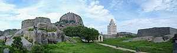

Gingee fort(செஞ்சிக் கோட்டை)
செஞ்சிக் கோட்டை (Gingee Fort, Senji Fort) (இந்தியாவின் தமிழ் நாடு மாநிலத்தில் தப்பியிருக்கும் மிகச் சில
கோட்டைகளுள் ஒன்றாகும். விழுப்புரம் மாவட்டத்தில் உள்ள செஞ்சியில், மாநிலத் தலைநகரமான சென்னையில் இருந்து 160 கிமீ
(100 மைல்கள்) தொலைவில் அமைந்துள்ள இது யூனியன் பிரதேசமான பாண்டிச்சேரிக்கு அண்மையில் உள்ளது. மராட்டிய மன்னரான
சிவாஜி, "இது இந்தியாவிலுள்ள எவரும் உட்புகமுடியாத கோட்டைகளுள் சிறந்தது" எனக் கூறுமளவுக்கு அரண் செய்யப்பட்ட
கோட்டையாக இது இருந்தது. பிரித்தானியர் இதனைக் "கிழக்கின் ட்ரோய்" என்றனர். முகலாயர்களால் பாதுஷாபாத் என்றும்
,சோழர்களால் சிங்கபுர நாடு என்றும் அழைக்கப்பட்டது.

இயற்கையோடு ஒன்றிய மூன்று பெரிய மலைகள், இரண்டு சிறிய குன்றுகள் 12 கி.மீ., நீளமுள்ள மதில் சுவர்களால் இணைந்தது
முக்கோண வடிவமாக அமைந்துள்ளது செஞ்சிக்கோட்டை. பல போர்களை சந்தித்த பிறகும், இன்றும் கம்பீரமாக காட்சி தருகிறது.
சோழர் காலத்தில் செஞ்சிக்கு பெயர் சிங்கபுரி, சிங்கபுரி கோட்டம் எனப்பட்டது. அதுவே பின்னாளில் செஞ்சி ஆகிவிட்டது.
இப்பொழுதும் செஞ்சிக்கு அருகே சிங்கவரம் என்ற ஊர் உள்ளது, அது செஞ்சி அந்த காலத்தில் பெரிய நிலபரப்பு கொண்ட ஊராக
இருந்திருக்கலாம் என்பதற்கு சான்றாக அமைந்துள்ளது.
History(வரலாறு)
செஞ்சிக்கோட்டையை பல்லவர்கள் வழி வந்த காடவ மன்னன் செஞ்சியர் கோன் காடவன் கட்டியதாகவும், இடையர் குலத்தைச் சார்ந்த அனந்தக்கோன் என்பவர் கட்டியதாகவும் இருவேறு கருத்துகள் உள்ளன. செஞ்சியின் இரண்டு நூற்றாண்டுகள் வரலாற்றை கூறும் மெக்கன்சி சுவடித்தொகுப்புகளில் இது தொடர்பான பல தகவல்கள் உள்ளன.
Thiruvakkarai Fossil Wood Park
கல்லாக மாறிய மரங்கள்
விழுப்புரம் அடுத்த திருவக்கரை பகுதியில் 247 ஏக்கர் பரப்பளவில் 200க்கும் மேற்பட்ட மரங்களை கொண்டுள்ளது இந்த தேசிய கல்மரப் பூங்கா.இந்த கல் மர பூங்காவை கண்டுகளிக்கவெளி மாவட்டங்கள் மற்றும் மற்ற மாநிலத்திலிருந்தும் பொதுமக்கள் வருகை புரிகின்றனர். தமிழ்நாட்டில் விழுப்புரம் மாவட்டம், வானூர் வட்டம் திருவக்கரை கிராமத்திற்கு கிழக்கே 1 கி.மீ. தொலைவில் உள்ள மேட்டு நிலப்பகுதிகளில் மணல்பாறைகளுக்கிடையே கல்லாக மாறிய மரங்கள் காணப்படுகின்றன. இந்த படிவுப்பாறைகள், கடலூர் மணற் கல் தொகுப்பைச் சேர்ந்தவை. விளம்பரம்
இந்த கல்மரப் பூங்கா குறித்து இந்திய புவியியல் ஆய்வுத்துறை கூறுவதாவது
சுமார் இரண்டு கோடி ஆண்டுகளுக்கு முன்பு இந்தப் பகுதியிலிருந்த காடுகளிலிருந்து ஆற்றில் அடித்து கொண்டு வரப்பட்ட
மரங்கள் மணலோடு, கூழாங்கற்களோடு சேர்ந்து இங்கிருந்த நீர்நிலைகளில் படிந்தன. காலப்போக்கில் மென்மேலும்
மணற்படிவங்கள் அடுக்கடுக்காகப் படிந்ததால் ஏற்பட்ட வெப்ப அழுத்த மாற்றங்களால், இவை மரத்தின் தன்மையை இழந்து,
சிலிக்காவை எடுத்துக்கொண்டு கல்மரங்களாக மாறின .
இருப்பினும், கல்மரங்களில் கால வளையங்கள், கணுக்கள் போன்றவை மரத்தின் தோற்றம் மாறாமல் அப்படியே காணப்படுகின்றன.
இங்கு சுமார் 247 ஏக்கர் பரப்பளவில் 200 க்கும் மேற்பட்ட கல்மரங்கள் உள்ளன. பெரும்பாலும் படுக்கை வாக்கில்
கிடக்கும். இந்த அடிமரங்களில், கிளைகளோ, வேர்களோ, பட்டையோ காணப்படவில்லை. எனவே, இவை இப்போது உள்ள இடத்திற்குக்
கொண்டுவரப்பட்டு பின்னர் கல்மரங்களாக மாறியிருக்க வேண்டும் என்பது தெளிவாகிறது.
இவற்றில் சில 30 மீ நீளமும் 1.5 மீ குறுக்களவும் உடையவை . அதுமட்டுமல்லாமல் இதுபோன்று புவியில் சம்பந்தப்பட்ட பல
தேடல்களை தேடிவரும் அறிஞர் எம்.சொன்னேர்ட்
( 1781 ) எனும் ஐரோப்பிய அறிஞர் இந்த கல்மரங்கள் பற்றி ஆய்வு செய்துள்ளார். இவரின்ஆய்வில்இவைகளில் சில திறந்த விதை
தாவர இனத்தையும் சில மூடிய விதை தாவர இனத்தையும் சேர்ந்தவை என கூறியுள்ளார்.
மேலும், இக்காலத்தில் உள்ள புன்னை, கட்டாஞ்சி, ஆமணக்கு குடும்பங்களைச் சேர்ந்த மரங்களும், புளியமரம் போன்றவைகளும்
இங்கே கல்மரங்களாக உள்ளன. உலகின் சில பகுதிகளில் மட்டுமே கிடைக்கும் இந்த அரியவகை கல்மரங்கள் பூமியின் வரலாற்றை
உரைக்கும் வரலாற்றுச் சான்றுகளாகும். இவ்வகை கல்மரங்கள் மிகவும் கவனமாக போற்றிப் பாதுகாக்கப்படவேண்டியனவாகும்.
Comments